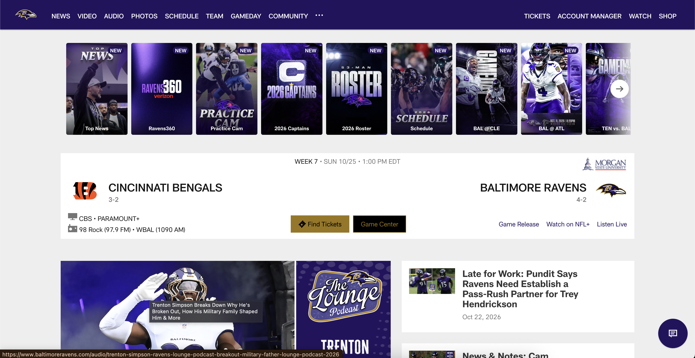

General Information

What is the URL of the website?
https://www.baltimoreravens.com/What is the name of the website?
Baltimore Ravens
Who is the target audience of this website?
Fans of the Baltimore Ravens and those who want news and information about the team.
UI and UX Design
How is the site organized?
The Ravens website uses hierarchal organization. There is a navigation bar, multiple sections on each page, and multiple pieces of content in each section.
Which CRAP Design Principle does the website use?
This website does a great job of exemplifying the design principle of alignment. Almost all of the content on each page is center aligned, with images and sections lined up perfectly with each other. Specifically, if you look at the home page, all content within a section or heading has the same dimensions for consistency, which makes the website pleasant and easy to look at.
Audit Score and Accessibility
The Ravens website scored a 10/100 in WCAG & ADA compliance which makes it not compliant. Some issues found on the website incude images without alternative text, ID attributes being used more than once, and heading levels not following a hierarchal sequence.
What is the site's effectiveness? Does it help users complete actions accurately?
The site does a good job at being effective. There are tons of options for viewable content all on the main page, allowing you to accurately find what you're looking for, such as the latest news, injury reports, team schedule, player highlights, roster, podcasts, and even live broadcasts.
What is the site's efficiency? Can users perform tasks quickly?
The site is very efficient in its ease of access to all of its main content that users are looking for. There is a navigation bar that has lots of content and stays consistent on all pages. It even expands in a drop down menu with more content to provide easy access for less commonly accessed pages. This allows users to quickly access any page containing the information they are looking for, from any page on the website.
How is the engagement? Is it pleasant to use and appropriate for its industry/topic?
The engagement of this website is pretty good. There are lots of pictures and colors which keep it entertaining to look through. I think it is appropriate for its purpose as a one stop shop for all information regarding the Ravens. It is mostly a website for the latest news about the team, with blog posts making up much of the content.
Personal Recommendation
What could be improved?
As seen earlier in this review, the Baltimore Ravens website has an extremely low accessibility audit score. The first improvement I would make to this website is editing the code to be up to WCAG and ADA standards. Another thing that could be done to improve the website is simplification. AS mentioned, there are lots of blog posts and news articles on the website, as well as something they call "Ravens Reels", which are short form videos displayed across the website. There is frankly a lot of content to look at all at once, and although it is organized well, I think it could benefit to showing less of these segments on the homepage and keep them on their own pages.